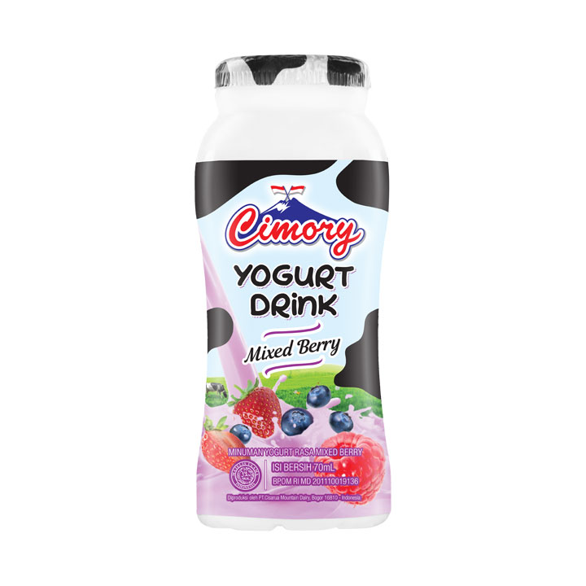
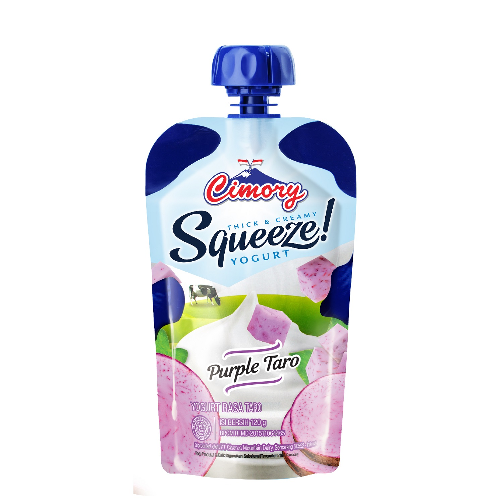

History of Chimory
Cimory Group adalah produsen produk makanan dan minuman kemasan berbasis protein di Indonesia, dengan pangsa pasar terkemuka di yogurt dan sosis premium. Didirikan pada tahun 1993, Grup saat ini memproduksi daging olahan, produk susu dan telur dengan berbagai merek, termasuk Cimory, Kanzler dan Besto, yang dijual melalui berbagai channel termasuk modern and traditional retailers, Food Service dan tim direct selling. Grup berbasis di Jakarta dengan fasilitas manufaktur di Jawa Barat, Jawa Tengah dan Jawa Timur. Dengan visi untuk meningkatkan asupan protein orang Indonesia dari susu dan daging, Cimory berfokus pada produk-produk berkualitas tinggi, bergizi dan bernilai tambah.
Chimory Fresh Milk
Cimory Milk terbuat dari susu segar dan hanya bahan-bahan terbaik yang diproses menggunakan standar proses yang canggih. Cimory Milk mengandung nutrisi baik yang penting, yaitu protein, karbohidrat, vitamin dan berbagai mineral seperti kalsium, fosfor, magnesium dan seng. Cimory Milk dianjurkan untuk dikonsumsi setiap hari karena melengkapi kebutuhan asupan nutrisi harian dan juga baik untuk pertumbuhan Anda, cocok untuk anak-anak dan orang dewasa.
| UHT Milk 125 ml | UHT Milk 250 ml | UHT Milk 950ml |
Chimory Yoghurt
Cimory Yogurt terbuat dari susu segar pilihan terbaik yang difermentasi dengan bakteri baik dan diperkaya dengan buah segar. Cimory Yogurt mengandung protein, kalsium dan serat yang menjaga kesehatan pencernaan, baik untuk pertumbuhan dan kekebalan tubuh. Cimory Yogurt memiliki berbagai banyak pilihan rasa menarik.
|  |  |  |
||
| Mini Yoghurt Drink 70 ml | Chimory Squeeze 120 gr | Yoghurt Drink 200 ml | Yoghurt Drink 250 ml | Cup Yoghurt 400ml |
Know Your Taste!
| Produk | Rasa |
|---|---|
| Susu | Almond |
| Banana | |
| Blueberry | |
| Chasew | |
| Chocolate | |
| Chocolate Mint | |
| Matcha | |
| Sea Salt | |
| Strawberry | |
| Yoghurt | Original |
| Blueberry | |
| Strawberry |
For more information, please click here!